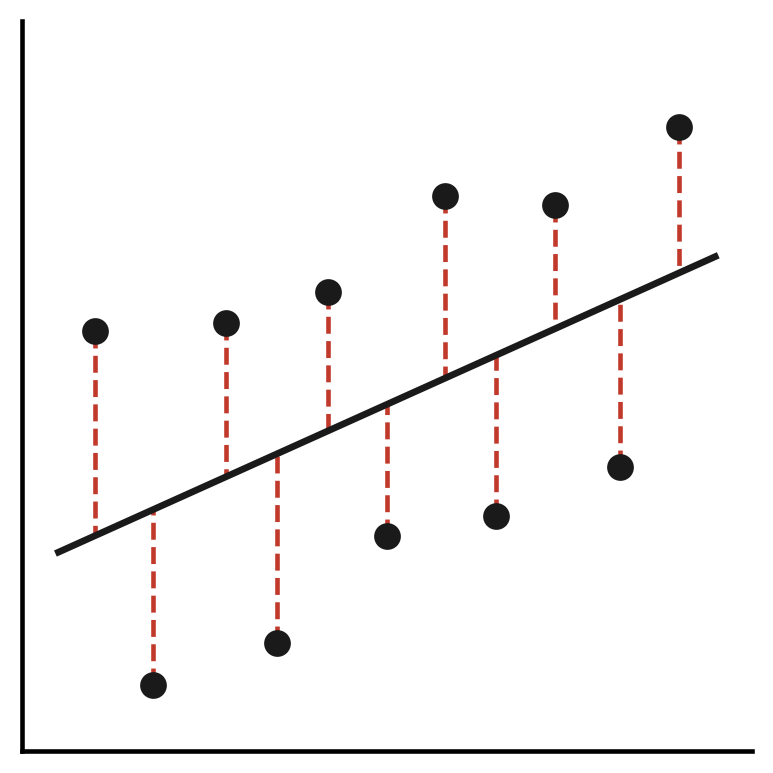
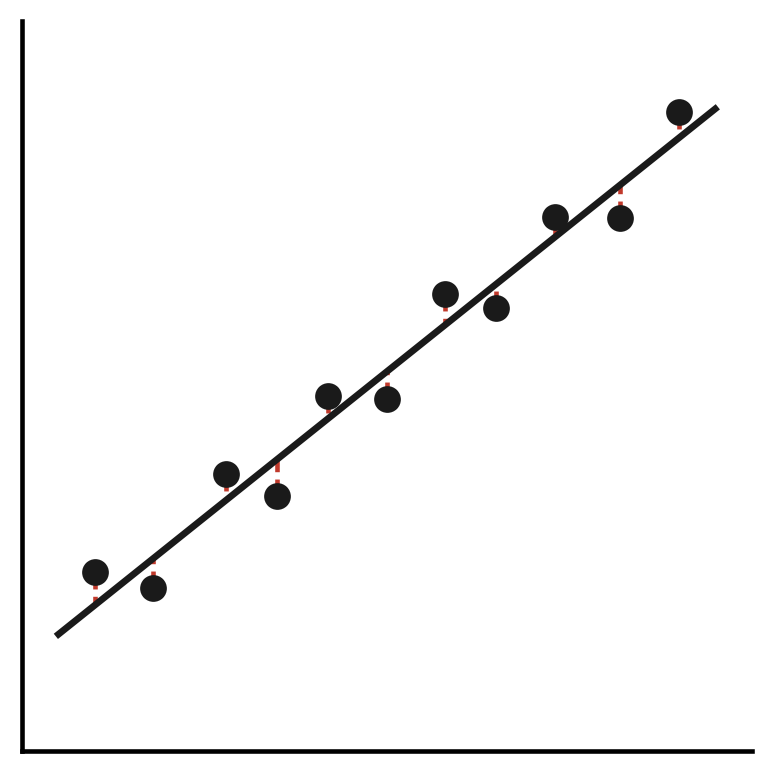

R-squared
You’ll learn to
- Define R-squared and explain what it measures.
- Interpret R-squared as a percentage of explained variance.
- Understand what R-squared does and does not tell you.
What the R-squared measures
- R-squared is the proportion of variance in y explained by x.
- It always lies between 0 and 1.
- Read it as a percentage: R² = 0.30 means 30% of variance explained.
The formula
\[R^2 = 1 - \frac{SS_{RES}}{SS_{TOT}}\]
- \(SS_{RES}\): how much the model misses.
- \(SS_{TOT}\): how much y varies in total.
Residual Sum of Squares
- Each residual is the vertical distance from a dot to the regression line.
- We square each distance and sum them all up.
- Large residuals → model predictions are often far off.
Total Sum of Squares
- Each observation’s distance from the mean of y, squared and summed.
- This is simply the variance of y — total spread in the outcome.
- It is a baseline: how much y varies without any model.
The logic of the formula
\[R^2 = 1 - \frac{SS_{RES}}{SS_{TOT}}\]
- If the model fits well: \(SS_{RES}\) is small relative to \(SS_{TOT}\).
- The fraction is close to 0 → R² is close to 1.
- If the model fits poorly: the fraction is close to 1 → R² is close to 0.
Visual intuition: low R-squared

- Dots are widely scattered around the regression line.
- \(SS_{RES} \approx SS_{TOT}\) → R² near 0.
Visual intuition: high R-squared

- Dots cluster tightly around the regression line.
- \(SS_{RES} \ll SS_{TOT}\) → R² near 1.
Brexit example
- In the Leave vote on higher education regression: R² ≈ 0.30.
- About 30% of the variation in Leave vote share across UK regions is explained by differences in higher education share.
What the remaining 70% means
- 70% of the variation in Leave vote share is not explained by education.
- Other factors matter: economic conditions, age, geography, identity.
- A bivariate model captures one piece of a more complex picture.
What R-squared does not mean
- A higher R² does not mean the relationship is causal.
- A low R² does not mean the slope is wrong or unimportant.
- R-squared measures fit, not truth.
R-squared and statistical significance
- A slope can be statistically significant with a low R².
- Statistical significance: is the slope distinguishable from zero?
- R-squared: how much of y does the model explain?
Recap
- R² = proportion of variance in y explained by x; always between 0 and 1.
- High R² means good fit; it does not imply causality.
Why this matters:
- R-squared tells you how much work your model is doing.
- Bivariate R² values are often modest — that is expected.
- Evaluating fit is part of responsible, transparent quantitative research.